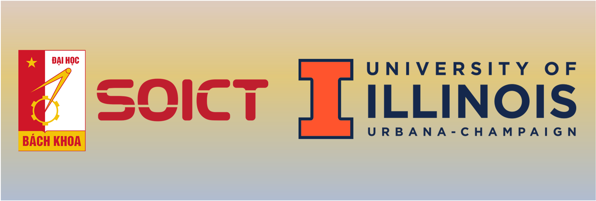
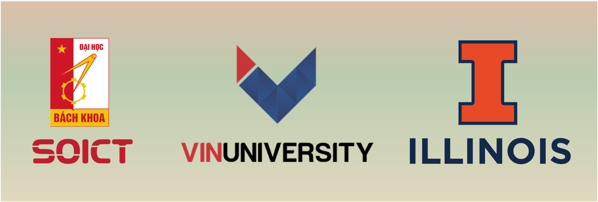
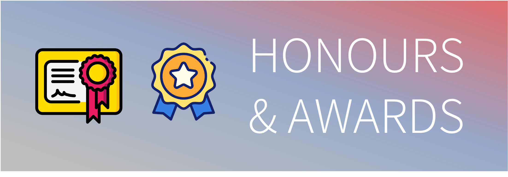

Biography

I’m Duy Nguyen, currently a PhD candidate in Computer Science at the University of Illinois Urbana-Champaign. I'm working under the supervision of Professor Minh N. Do.
My current research focuses on multimodal learning and representation learning. Recently, I've been diving into ways to handle extreme cases in multimodal systems, where data might be incomplete or inconsistent. It's a fascinating challenge to make models more trustworthy, even when they're working with less-than-perfect data. I work a lot with semi-supervised and self-supervised learning techniques to address these issues. One of my key interests is uncertainty estimation, where I aim to improve both the reliability and interpretability of the models I develop.
Looking ahead, I’m shifting my focus to Large Multimodal Models (LMMs). My main goal is to enhance their efficiency and reliability while still keeping accuracy high. Rather than developing entirely new large language models, I want to create plug-in techniques — essentially tools that can be easily integrated with existing LLMs. This way, I can help improve their performance in a more scalable and practical way.
I've also been fortunate to publish in several venues like ICDM, EAAI, Scientific Reports and PLOS ONE. My past projects have covered a range of topics, from time series prediction and sensor calibration to healthcare AI applications. I’ve worked extensively with technologies like graph neural networks, attention mechanisms, and ensemble learning, and I'm always excited to explore new challenges in AI and machine learning!
I was born in Hanoi, Vietnam, and grew up here.
I got my Bachelor (Engineer) degree in Information & Communication Technology (ICT) from School of Information And Communication Technology, Hanoi University of Science and Technology, Vietnam.
I am eager to learn, and I am very open to new collaborations.
Please drop me a message if you are interested in a collaboration, or just want to reach out.
Here is my CV for more details.
Experience

Before entering UIUC, I spent a gap year working at a Smart Health Center, founded under the cooporation of Vin University and University of Illinois Urbana - Champaign. My work here involve developing ML/DL frameworks for time series, multimodal data, with major appication to Healthcare domain.
During my undergrad, from 2020 to 2022, I worked in Naver-SoICT laboratory, Hanoi University of Science and Technology; before spending two last months of 2022 to do an internship at Japanese National Institute of Advanced Industrial Science and Technology (AIST).
My works there centered around two projects: the first was about air quality monitoring and forecasting with actual sensor devices,
the second was about personal health monitoring with actual mobile application and deep learning-driven tools.
Honours and Awards

Below are some awards I received, more details can be found in my CV:
- The second prize in the National Science and Technology Awards for Students in Higher Education
Institutions 2022: Winning the second prize with the paper entitled “Joint Optimization of Charging Location and Time
for Network Lifetime Extension in WRSNs.”
- Top 5 AI Solutions in AI Awards 2022: Being one of 5 best AI solutions in AI Awards 2022 - Vietnam AI Day 2022,
held by VNExpress newspaper in colabration with AI4VN organization with solution: “VAIPE: Protective healthcare
monitoring and supporting system for Vietnamese”
- The first prize in SoICT-IBM-Hackathon 2021: Winning the first prize in Call For Code Track of
SoICT-IBM-Hackathon 2021 with the project entitled “A platform for forecasting floods based on sensor system, applying deep
neural network.”
Publications
Below are some of my publications, more details can be found in my CV:
- Improving Time Series Encoding with Noise-Aware Self-Supervised Learning and an Efficient Encoder: Anh Duy Nguyen, Trang H. Tran,
Hieu H. Pham, Phi Le Nguyen, Lam M. Nguyen. International Conference on Data Mining (ICDM), 2024.
- GAMMA: A universal model for calibrating sensory data of multiple low-cost air monitoring devices: Anh Duy Nguyen, Thu Hang Phung, Thuy Dung Nguyen, Huy Hieu Pham, Kien Nguyen, Phi Le Nguyen. EAAI 2024
- High accurate and explainable multi-pill detection framework with graph neural network-assisted multimodal data fusion: Anh Duy Nguyen, Huy Hieu Pham, Huynh Thanh Trung, Quoc Viet Hung Nguyen, Thao Nguyen Truong, Phi Le Nguyen. PLOS ONE 2023.
- Attentional Ensemble Model for Accurate Discharge and Water Level Prediction with Training Data Enhancement: Anh Duy Nguyen, Duc Viet Hoang, Thuy Dung Nguyen, Viet Hung Vu, Kien Nguyen, Phi Le Nguyen, Yusheng Ji. EAAI 2023.
- Accurate Discharge and Water Level Forecasting Using Ensemble Learning with Genetic Algorithm and Singular Spectrum Analysis-based Denoising: Anh Duy Nguyen, Phi Le Nguyen, Viet Hung Vu, Quoc Viet Pham, Viet Huy Nguyen,
Minh Hieu Nguyen, Thanh Hung Nguyen, Kien Nguyen. Nature Scientific Reports 2022.
Contact